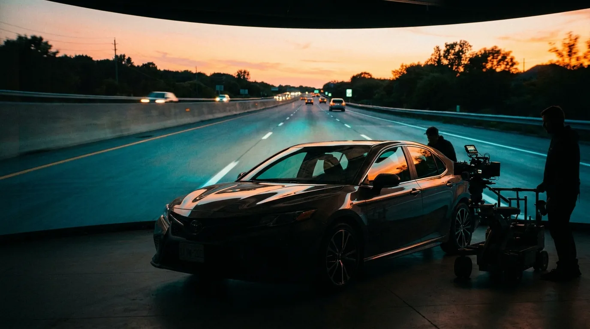
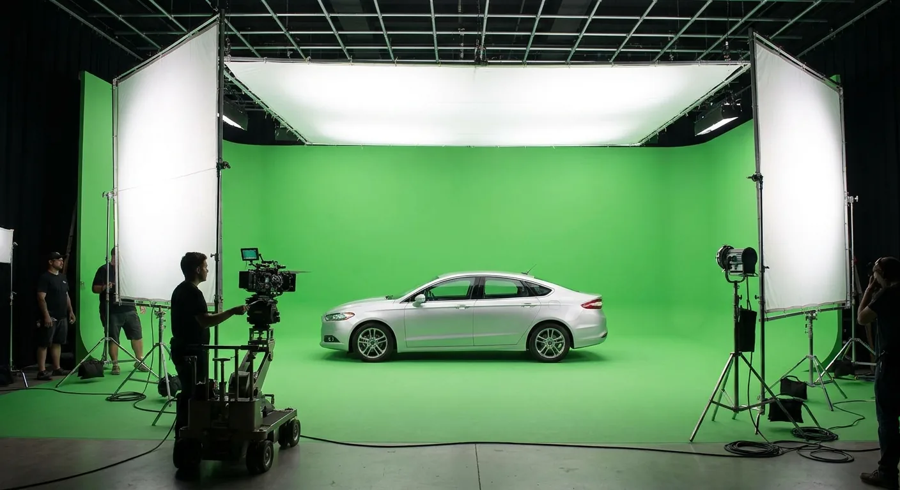

There are three honest ways to put a car in motion on screen: tow it down a real road on a process trailer, shoot it on green and build the world in post, or park it on stage in front of an LED wall playing a driving plate. None of them is the right answer every time. The shot decides.
What changes between them is where the work lands: on the road, in post, or in prep. Match the method to the scene and it is half-shot before you roll. Get it wrong and you pay for it in permits, in compositing, or in a shoot day you cannot get back.
The trailer
A process trailer is the real thing. The car rides a rig, the camera rides with it, and the world goes by because it actually does. For a true exterior at speed, the full body of the car in frame, nothing reads more honest.
The cost is logistics. You are booking road closures, police escorts, a precision driver, and a convoy, and you are at the mercy of weather and light. Audio fights wind and engine. A cloud rolls in and your coverage no longer matches. When a scene genuinely needs the open road, it earns all of that. When it does not, you are paying road-movie prices for a conversation in a front seat.
The green
Green screen flips the bill to post. On the floor it is fast and cheap: a lit cyc, a static car, a clean key. You pick the background later and change your mind as often as you like.
The catch is everything glass and metal touch. The actor reacts to nothing. Reflections and eyelines get faked or fixed. A car is a mirror, so a reflective body on green becomes a roto-and-comp bill that grows with every window. It wins when the background is flat and far, the car is matte or boxed in tight, and the look is finished in post anyway. More on green versus the volume →

The wall
Park the car in front of an LED volume and the plate plays behind it. Now the glass reflects a real road, the paint catches real light, and the eyeline is something the actor can follow. On a windshield, the background is no longer optional: glass reflects whatever is actually there, and the wall puts something real there to catch.
It finishes in camera. Day, dusk, a tunnel, or a city at night, the light wraps the car and the cabin the way the plate does, so faces are lit by the scene instead of a guess. Cineva runs the wall and the playback, synced frame-accurate to camera. You bring the plate or source a custom one, and we point clients to drivingplates.com for that. The car never moves, so audio stays clean and the day stays on stage. How driving plates work →
How to choose
Match the method to the shot. A genuine open-road exterior at speed, full body, no interactive light to worry about: the trailer can be worth the convoy. A flat background, matte surfaces, the look built in post: green is the cheap, flexible call. A reflective car, interactive light, an actor who has to perform to the road, or a night drive you need to control: the wall finishes it in camera and keeps the day intact.
Most car days are not one or the other. A series might tow for the title sequence, key a flat insert on green, and shoot the dialogue on the wall where the performance lives. The trick is deciding per scene, not per show.